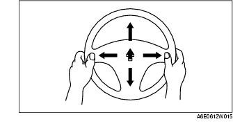

Steering wheel and column inspection
Play Inspection
1. With the wheels in the straight-ahead position, start the engine.
2. Turn the steering wheel to the left and right gently, and verify that the steering wheel play is within the specification.
Steering wheel playLooseness, Play Inspection
1. Move the steering wheel toward the shaft and in four right angle directions to inspect for looseness and play.

Steering Wheel Effort Inspection
1. Verify that the equipped tire size and tire air pressure is as specified.
2. With the vehicle on a hard, level surface, put the wheels in the straight-ahead position.
- • Handling the air bag module improperly can accidentally deploy the air bag module, which may seriously injure you. Read the service warnings before handling the air bag module. (See SERVICE WARNINGS.) (See SERVICE CAUTIONS.)
3. Remove the air bag module. (See DRIVER-SIDE AIR BAG MODULE REMOVAL/INSTALLATION.)
4. Start the engine and idle it.
5. Verify that the EPS warning light does not illuminate.
6. Inspect the steering wheel effort using a torque wrench.

- • If it exceeds the reference value, adjust the steering gear and linkage. (See STEERING GEAR AND LINKAGE ADJUSTMENT.)
- • To determine whether the steering effort is satisfactory or not, perform the inspection on another vehicle of the same model and under the same conditions, and compare the results.
- • The steering wheel effort varies with conditions indicated below.